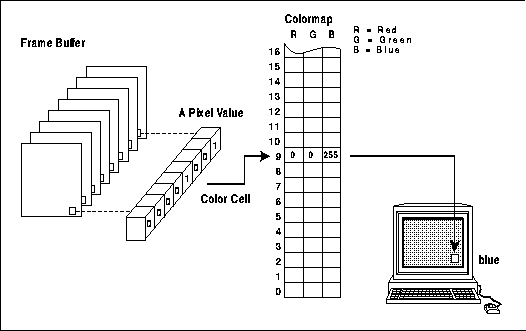
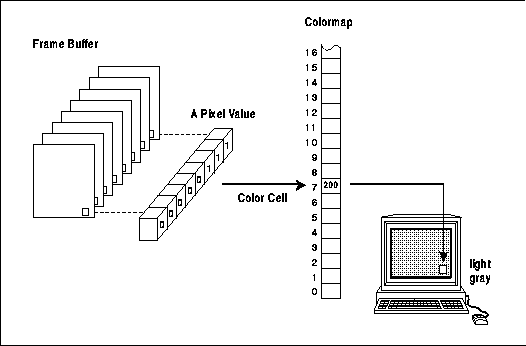
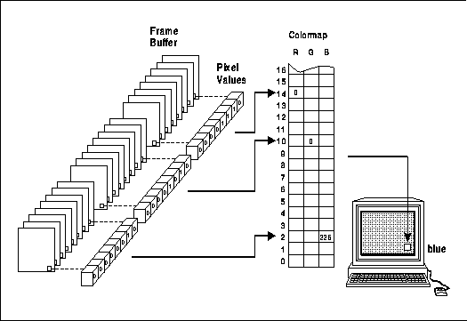
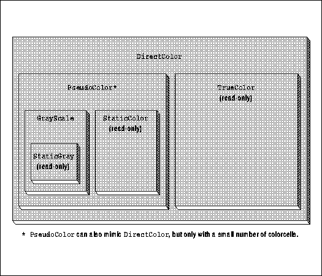
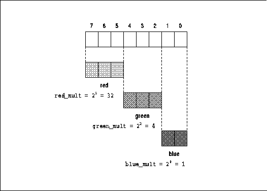
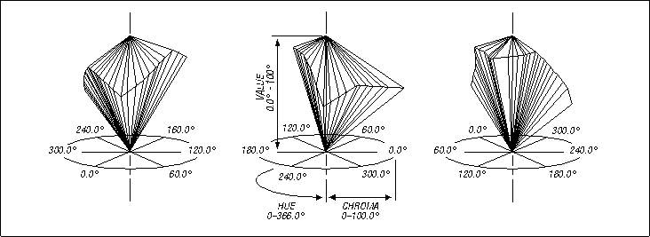

Xlib Programming Manual (O'Reilly & Associates, Inc.) |
A typical X application allows the user to specify colors for the background and border of each of its windows, colors for the cursor, and foreground and background colors to be set in GCs for drawing text and graphics. More complex applications (such as Computer Aided Design (CAD) applications) might use color to distinguish physical or logical layers. Still more complex applications, such as in imaging, might use fine gradations of color to represent real-world data. Yet in discussing the background and border window attributes and how to set the foreground and background members of the GC, we have spoken only of pixel values.
How are these pixel values translated to colors? And how must an X client manage color if it is to run successfully on the wide variety of screen hardware available in the X environment?
Because X must support a wide variety of systems with differing screen hardware, the Xlib color-handling mechanisms are fairly complex. Even programmers who have previously written color graphics applications will find there are some new concepts to learn.
This chapter starts out by describing the different types
of screens that an X application may run on and the mechanisms Xlib provides
for determining the screen type. It then describes the simplest color-allocation
mechanisms, which could be used by applications whose principal use of
color is for decoration. It proceeds to discuss more complex color applications
and concludes with a section on writing applications that will be portable
across different types of color and monochrome screens.
You, no doubt, know that a color screen uses multiple bits per pixel (also referred to as multiple planes) to specify colors. A colormap is used to translate each pixel's value into the visible colors you see on the screen.
A colormap is no more than a lookup table stored in the server. Any given pixel value is used as an index into this table--for example, a pixel value of 16 will select the sixteenth element, or colorcell.
On the most common type of color system, each colorcell contains separate 16-bit intensity values for each of the three primary colors.
As shown in Figure 7-1, a pixel value uniquely identifies a particular colorcell. Each pixel value in the visible portions of a window is continuously read out of screen memory and looked up in the colormap. The RGB values in the specified colorcell control the intensity of the three primary colors and thus determine the color that is displayed at that point on the screen.
Pixel value to RGB mapping with the colormap on a color screen

The range of colors possible on the screen is a function of the number of bits available in the colormap for RGB specification. If eight bits is available for each primary, then the range of possible colors is 256 3 (about 16 million colors).
However, the number of different colors that can be displayed on the screen at any one time is a function of the number of planes. A 4-plane system could index 2 4 colorcells (16 distinct colors); an 8-plane system could index 2 8 colorcells (256 distinct colors); and a 24-plane system could index 2 24 colorcells (over 16 million distinct colors).
A client attempting to use color does not specify
a pixel value and the color to be put in that cell in order to draw in
a given color. Instead, it requests access to a colorcell in a colormap
(managed by the server) and is returned a pixel value. This is called
allocating a color. When a client allocates a color, it asks the
server, "Which colorcell can I use?" and the server responds by saying,
"You can use the colorcell specified by this pixel value." There are three
basic functions that allocate colors, which are described in detail and
demonstrated in later sections in this chapter.
Because of differences in screen hardware, the same RGB values may generate quite different colors on different hardware. Therefore, server implementors were intended to change the RGB values corresponding to each color name to make sure that the appropriate color appears on their screen. This is called gamma correction. By using names from this database, you are more sure of getting a color close to the one you request. If the server implementor has not provided a gamma-corrected color database, there is no way a program can tell exactly what color is being displayed even when it knows the RGB values. This problem is solved with the X Color Management System, or Xcms, which was introduced in Release 5. Xcms provides a client-side color database, and supports device-independent color specification. In R5, color name strings are looked up first with the client-side color database, and if not found then on the server database.
It is also important to note that the color names are not specified by the X11 protocol or Xlib. Therefore, server implementors may change them, but more often, they will simply add to the list. (Note that some servers allow users to customize this file. For more information, see Volume Three, X Window System User's Guide.)
Table 7-1 shows some of the color names and corresponding RGB values in the default color database. The complete R4 database is extensive and is shown in Appendix D, The Server-side Color Database, of Volume Two, Xlib Reference Manual. The text version of this database in the standard distribution on a UNIX-based system is in the file /usr/lib/X11/rgb.txt. The server reads a compiled version of it.
The color names in the color database are strings in which each character uses the ISO Latin-1 encoding. The ISO (International Standards Organization) Latin-1 encoding is used by virtually all workstations manufacturers. What this means is that the first 127 character codes correspond to 7-bit ASCII and are the normal English characters that appear on U.S. keyboards. But ISO characters are 8-bit, and the characters from 128 to 255 are used for characters with accents and other variations, necessary for other Western languages.
Server vendors should be able to supply a color database file for each foreign language. The RGB values would be the same, but the names would be different. In the English file, the entry for green is encoded with the ISO character codes 103 (g), 114 (r), 101 (e), 101 (e), 110 (n). In German, the same entry would be for grün, encoded with the ISO codes 103 (g), 114 (r), 252 (ü), 110 (n). In a workstation configured for German, there will be an easy way to type ü.
Note that keysyms also use the ISO Latin-1 standard, as
shown in Chapter 8, "Events."
| English Words | Red | Green | Blue |
|---|---|---|---|
| aquamarine | 112 | 219 | 147 |
| black | 0 | 0 | 0 |
| blue | 0 | 0 | 255 |
| blue violet | 159 | 95 | 159 |
| brown | 165 | 42 | 42 |
| cadet blue | 95 | 159 | 159 |
| coral | 255 | 127 | 0 |
| cornflower blue | 66 | 66 | 111 |
| cyan | 0 | 255 | 255 |
| light gray | 168 | 168 | 168 |
| light grey | 168 | 168 | 168 |
| light steel blue | 143 | 143 | 188 |
| lime green | 50 | 204 | 50 |
| magenta | 255 | 0 | 255 |
| maroon | 142 | 35 | 107 |
| medium aquamarine | 50 | 204 | 153 |
Also defined are the color names "gray0" through "gray100", spelled with an "e" or an "a". "gray0" is black and "gray100" is white. See Appendix D, The Server-side Color Database, of Volume Two, Xlib Reference Manual, for a listing of the complete sample database.
A device-dependent RGB value is represented as follows:
where <red>, <green>, and <blue> are each between 1 and 4 hexadecimal digits. Different primaries may be specified with different numbers of digits. If fewer than 4 digits are specified, they do not simply represent the most significant bits of the value; instead they represent a fraction of the maximum value. So the single digit 0xA does not mean 0xA000, but 10/15ths of 0xFFFF, or 0xAAAA.RGB:<red>/<green>/<blue>
X11R5 supports an additional device-dependent color space, called RGBi, in which each red, green, and blue integer value is replaced with a floating-point intensity between 0.0 and 1.0. In this model, the range of possible color values are simply mapped onto the real numbers between zero and one. So, for example, 0.5 always represents half intensity of a color. Note that these values represent the physical intensity of a color, which is not linearly proportional to the perceptual intensity of that color. A color specification for RGBi has the following form:
where <red>, <green>, and <blue> are floating-point numbers between 0.0 and 1.0, inclusive.RGBi:<red>/<green>/<blue>
Device-independent color specifications follow the same syntax--a color space name followed by a colon and slash-separated color space values. The following forms are recognized:
CIEXYZ and the each of the other five strings listed here are the names of color spaces, most of them international standards. Each of the values in these device-independent color spaces is a floating-point number. Note that different color spaces have different ranges of legal values for each parameter. For example, the u parameter of the CIEuvY color space must have a value between 0.0 and approximately 0.6, while the H parameter of the TekHVC color space represents an angle and thus varies between 0.0 and 360.0. Also, the valid values for one parameter often depend on the values of the others. In general, you will need to be familiar with the colorimetric theory behind a particular color space before attempting to specify colors in that space.CIEXYZ:<X>/<Y>/<Z> CIEuvY:<u>/<v>/<Y> CIExyY:<x>/<y>/<Y> CIELab:<L>/<a>/<b> CIELuv:<L>/<u>/<v> TekHVC:<H>/<V>/<C>
Example 7-1 shows this new style of color specification used in a resource file. Notice that color space names are case-insensitive.
Specifying device-independent colors from a resource file
*Background: TekHVC:72.0/50.0/44.0 *Command.background: CIELab:75.0/.38/.71 *quit_button.background: rgbi:1.0/0.0/0.0
Note that while X11R5 supports such a color database, the MIT release does not provide one, other than as an example to system administrators or users who want to define one of their own. The client-side color database should be thought of as a place for site-specific customizations, and useful, if non-standard, shortcuts for naming colors in user resource files. In particular, since the contents of the database are not standardized, application defaults files should not rely on any particular colors to be in the database.
X clients (on most UNIX systems) look for the client-side database in the file /usr/lib/X11/Xcms.txt by default, but the MIT sample implementation allows a different file to be specified with the XCMSDB environment variable. The format of the database is implementation-dependent. Example 7-2 shows an example database in the format supported by the MIT distribution.
Example entries from a client color database
Note that any device-dependent or device-independent color format may be used, and that color aliases are allowed to provide alternate names for colors defined elsewhere in the client database or even in the server database. Color names may contain spaces, and the tab character is used to separate color names from color specifications. The first and last lines shown in the example are required before the first and after the last entry of the database. Any text before the first line shown in the example is treated as a comment. Comments may not appear elsewhere in the file.XCMS_COLORDB_START 0.1 device red RGBi:1.0/0/0 device blue RGB:00/00/ff navy blue CIEXYZ:0.0671/0.0337/0.3130 gray0 CIELab:0.0/0.0/0.0 gray50 CIELuv:50.0/0.0/0.0 grey100 TekHVC:0.0/100.0/0.0 rouge red roja rouge XCMS_COLORDB_END
When the functions XAllocNamedColor(), XLookupColor(), XParseColor(), XStoreNamedColor(), or their device-independent Xcms analogs are passed a color string, they first attempt to parse it as a new-style specification for one of the supported color spaces. If this fails, they attempt to look up the color in the client-side color name database. If both approaches fail, they fall back on the pre-X11R5 behavior and attempt to parse the string in the old-style numeric format or pass the string to the X server to be looked up in the server database. Because the new X11R5 formats are supported by the pre-X11R5 Xlib functions, all X Toolkit widgets and type converters will work correctly with device-independent color specifications without change.
The hexadecimal form of color specification is necessary in R4 for the user to be able to specify an exact color, not just the rough approximation allowed by an string name. The hexadecimal specification must be in one of the following formats:
Each of the letters represents a hexadecimal digit. In the shorter formats, the specified values are interpreted as the most significant bits of a 16-bit value. For example, #3a7 and #3000a0007000 are equivalent.#RGB (4 bits each of red, green, and blue) #RRGGBB (8 bits each of red, green, and blue) #RRRGGGBBB (12 bits each of red, green, and blue) #RRRRGGGGBBBB (16 bits each of red, green, and blue)
Use of hexadecimal color specifications does not preclude
colorcell sharing, since the user could specify the same hexadecimal value
for the color for two or more clients. However, it probably tends to make
sharing less likely, since a window manager might allocate all the colors
in the color database as read-only cells, and then any client that uses
hexadecimal specifications will probably be allocating a separate cell
instead of sharing.
Mid-range color screens usually have only one hardware colormap. In other words, the pixel values in all the windows on the screen are mapped to colors using the same colormap. On most of these systems, however, the color in any colorcell in the hardware colormap can be individually changed, and therefore, the entire colormap can be replaced with a new set of values. X provides the concept of the virtual colormap, so that more than one set of colorcells can be maintained, even though only one of them can be in use at a time. Virtual colormaps are swapped in and out of the hardware colormap by the window manager. This makes it possible for an application that has special color needs to create its own virtual colormap, which the window manager will load into the hardware colormap when that application is in use. However, since only one hardware colormap is available and all applications share it, when any one application creates a new virtual colormap and the window manager installs it, all other applications will screen in false colors, since the pixel values they use now point to cells in the other client's colormap. This is acceptable, since the window manager always installs the correct colormap for the application in use, but it is obviously not ideal. On high performance systems, described below, this problem is solved by having multiple hardware colormaps.
Gray-scale screens are sometimes used for publishing applications, since pixels made up of a single phosphor are smaller than those made up of three phosphors and the resolution is, therefore, better. As shown in Figure 7-2, a gray-scale screen works by looking up the intensity of the pixel in the colormap, which, for this screen type, contains only a single value. This controls the intensity of a single electron beam. Gray scale can be simulated on a color screen by making the red, green, and blue values equal in a given colorcell to determine the brightness of gray pixels on the screen.
Pixel value to RGB mapping -- gray scale and monochrome screens

A gray-scale screen might have a read-only colormap, so that the gray levels in each cell could not be changed. A monochrome screen is an example of this type; it is a single-plane screen with a two-element read-only colormap.
The problem with having so many planes is that a colormap of the style used in mid-range color screens would be impossibly large: it would contain over 16 million entries. Instead, the available bits per pixel are broken down into three separate colormap indices, one for each primary color, as shown in Figure 7-3. This approach still allows the full range of colors to be generated but makes the job of loading the colormap much more manageable. This scheme requires three primary colormaps of only 256 entries each to specify all 16 million colors on a 24-plane system.
Pixel value to RGB mapping -- high performance color screens

In high performance screens, having a read-only colormap makes just as much sense as having it read/write, because nearly every color imaginable can be simultaneously available. With a read-only colormap, there is a fixed relationship between the pixel values used to select a color and the actual RGB values generated. This makes possible applications that want to calculate pixel values directly instead of having to calculate colors and then determine which pixel value represents that color, as is necessary when the colormap is read/write.
In reality, most screens in this class let you use the color resources in either fashion, using virtual colormaps. There can be one read-only virtual colormap and one read/write virtual colormap. However, unlike on mid-range color screen hardware, most high performance color systems have multiple hardware colormaps, so that both virtual colormaps can be installed and used at the same time. In fact, on many of these systems, each window can have its own virtual colormap installed in the hardware at the same time.
Most windows inherit their parent's visual, and windows will often share the root window's visual, which is known as the default visual. The default visual describes, naturally, the default colormap. If you create all your windows with XCreateSimpleWindow(), you will be using the default visual and colormap.
The Visual structure is intended to be opaque; programs are not supposed to access its contents. This is so that Xlib implementors can change the structure without breaking existing clients. The procedure used to avoid accessing its members is not all that cumbersome but is just beginning to come into use by application writers. Up to this point, most programmers have broken this rule. We will show you only the correct method here, since it adds only a few lines to the application.
Even more existing applications have avoided visuals altogether and used only the DefaultDepth() or DisplayPlanes() macros to attempt to determine whether the screen is monochrome or color. However, this does not work in general, because it does not distinguish between gray-scale screens and color screens (both have more than one plane). The only way to make this distinction is to get information about visuals.
Remember that a visual is only one way to use color on a particular screen. There may be a list of supported visuals on a screen, with each visual describing a different depth and writeability of the colormap. On a color system, there may be both monochrome and color visuals available.
The correct method to get information about the visuals supported on a particular screen is to use XMatchVisualInfo() or XGetVisualInfo(). These functions return XVisualInfo structures that contain information about the available visuals and are public so their fields can be safely accessed.
The class member of XVisualInfo contains a constant specifying one of six different visual classes, corresponding to the basic ways of using a screen: DirectColor, GrayScale, PseudoColor, StaticColor, StaticGray, or TrueColor.
As summarized in Table 7-2, the visual classes distinguish
between color or monochrome, whether the colormap is read/write or read-only,
and whether a pixel value provides a single index to the colormap or is
decomposed into separate indices for red, green, and blue values.
| Colormap Type | Read/Write | Read-only |
|---|---|---|
| Monochrome/Gray | GrayScale | StaticGray |
| Single Index for RG&B | PseudoColor | StaticColor |
| Decomposed Index for RG&B | DirectColor | TrueColor |
There may be more than one way of using color on a particular screen, and therefore, there may be more than one supported visual. This is usually true of high-end workstations. There are ways to search through the available visuals to select the one that most closely meets the needs of your application, as will be described later. Several visuals of the same class may be provided but at different depths. On high performance screens, it is possible to create the colormap as read/write or as read-only. Both methods have certain advantages and would be used for different applications. There would be a separate visual for each of these ways of using the screen hardware. One of these visuals would be TrueColor class and the other DirectColor class. Some 24-plane screens allow the screen to be treated as two separate 12-plane PseudoColor visuals. (This allows for "double-buffering," a technique useful for animation, or for storing distance data to simplify hidden line and plane calculations in 3-D applications.) In fact, on some advanced workstations, you can use a different visual in each window.
Figure 7-4 schematically represents the visual classes that can theoretically be supported by each type of screen hardware. A screen that supports the DirectColor class can theoretically support any of the six visual classes. A screen that supports the PseudoColor visual class can support GrayScale, PseudoColor, StaticColor, or StaticGray visual classes. A screen that supports the GrayScale visual class can also support StaticGray visual classes. The three types of screen with read-only colormaps can only support visuals of their own class. But remember that just because a certain visual class can theoretically be supported by a certain screen hardware does not mean that the server implementors will decide to support that class.
Hierarchy of visual classes

One advantage of immutable colormaps is that all the cells are read-only and can be shared between clients, so all the cells are available to every client. Immutable colormaps also make it possible to calculate pixel values from the colors desired without querying the server, since the mapping between pixel values and colors is predictable. This technique is necessary for smooth shading and 3-D rendering algorithms. As you will see, this is usually not possible with changeable colormaps. The disadvantages of immutable colormaps are that there may not be the exact color you desire (if there are a small number of planes) and you cannot allocate read/write cells, so you cannot change a colorcell to change the color of existing pixels on the screen. To change a color, you have to redraw the graphics with a new pixel value.
In general, the advantage of changeable colormaps is that you can have both private read/write cells and shareable read-only cells. That is why PseudoColor and DirectColor are the most useful visuals, when a screen supports them. PseudoColor and DirectColor allow you to decide whether your client really needs read/write cells or whether it can use read-only cells. Read-only usage is preferred, since these cells can be shared by all clients, which means that the colormap is less likely to run out of free cells.
Try not to confuse the writeability of colormaps with the writeability of colorcells. A colorcell in a read/write colormap can be allocated read/write or read-only. A colorcell in a read-only colormap can only be allocated read-only. A changeable colormap could be made entirely read-only if the window manager or any other client allocates all available colorcells read-only.
The advantages of read/write colorcells, available only
in changeable colormaps, are that your program can select exactly the color
you want (as long as it is physically possible on the screen) and you can
change the color at will, which instantly changes the visible color of
everything drawn with that pixel value if the colormap is currently installed.
Although any other client can also change the values in a read/write cell,
it is a convention that only the client that allocated the cell should
change its contents. You own that pixel value. Since most clients
cannot be satisfied with having no control over their displayed colors,
this pixel value is not shareable. That means that if several clients that
use read/write colorcells are running, all the colorcells might be used.
Then some client will be forced to create its own colormap, with the negative
consequences described in Section 7.10, "Creating and Installing Colormaps."
The returned pixel value can be used to set the background_pixel or border_pixel attribute of a window or to set the foreground or background member of a GC, which are used by drawing requests. (See Chapter 4, "Window Attributes," and Chapter 5, "The Graphics Context," for more information.)
Read-only colorcells can be allocated with the following routines:
XParseColor() parses a color name string or a hexadecimal color specification string and returns RGB values. It can be used with XAllocColor() or the routines that allocate read/write cells, which will be described later. For color names, it gets the RGB values from the server's color database just like XAllocNamedColor(). You may have noticed that XAllocNamedColor() is very similar to the combination of XParseColor() and XAllocColor(). The difference is slight: XAllocNamedColor() can interpret color names but not hexadecimal specifications--but hexadecimal specifications are rarely made by users anyway. The two-routine combination is more often used because it allows you to separately report errors in parsing the color specified and allocating the colorcell.
Using XQueryColor() and XQueryColors() you can find out what RGB values are in each colorcell. But there is no way to determine whether a given cell is read-only or read/write. The only way to tell how many cells are currently unallocated is to allocate N colors using XAllocColorCells(), using the maximum possible N initially, then reduce N until it succeeds (not recommended). A binary search is a faster way to find N.
A request to allocate a color may fail because there are no free colormap cells and, for read-only colorcells, because no existing colorcell contains the closest color possible on the hardware to the exact color requested. Applications must allocate colors by trial and error. The routines that allocate colorcells all have Status return values. If the call to allocate colorcells returns False, the client may modify the arguments and try again. If repeated attempts fail, the client can settle with BlackPixel and WhitePixel() or, if these colors are inadequate, create a new virtual colormap. An application with picky color needs that cannot be satisfied can simply report to the user that its color needs cannot be met and exit.
Note that XAllocColor() works somewhat differently on dynamic visuals (such as PseudoColor) than it does on static visuals (like StaticColor). On dynamic visuals, it fails if it is unable to allocate the exact RGB values requested (i.e., if there are no free cells and no cells already allocated with the exact RGB values requested). On static visuals, it returns the cell with the closest RGB values. The algorithm used to determine "closest" is server-dependent. The moral of this is that a program must be prepared for XAllocColor() to fail.
The XColor structure is shown in Example 7-3. The information it contains closely matches the information in each cell of the colormap.
The XColor structure
typedef struct {
unsigned long pixel; /* Pixel value */
unsigned short red, green, blue; /* RGB values */
char flags; /* DoRed, DoGreen, and/or
* DoBlue */
char pad; /* Unused; pads structure
* to even word boundary */
} XColor;
In XAllocColor() and XAllocNamedColor(), the
pixel member returns the pixel value that will be used to set the
foreground or background pixel value in the GC or window attributes. In
XStoreColor() and XQueryColor(), which you will see later,
the pixel member indicates which cell in the colormap is having
its color set (read/write cells only) or is having its RGB values queried.
The red, green, and blue members are 16-bit values. Full brightness in a color is a value of 65535, half brightness is 32767, and off is 0. (The server automatically scales these values if the hardware colormap includes fewer bits for RGB values.)
The flags member of the XColor structure is a bitwise OR of the symbols DoRed, DoGreen, and DoBlue. These flags are used to specify which of the red, green, and blue values should be read while changing the RGB values in a read/write colorcell. How these are used is demonstrated in Example 7-4.
This routine uses XMatchVisualInfo() to determine whether color is supported on the screen. If any of the four color visual classes are supported, it proceeds to attempt to allocate read-only colors. Whenever anything fails or if color is not supported, the routine uses black and white. For some applications, this could be modified to allocate levels of gray on GrayScale visual class screens.
The code for all the examples in this chapter is in the example source in the directory /basicwin/color/. This example is called basic.ro.
Allocating read-only colorcells
#include <X11/Xlib.h>
#include <X11/Xutil.h>
#include <X11/Xos.h>
#include <stdio.h>
extern Display *display;
extern int screen_num;
extern Screen *screen_ptr;
extern unsigned long foreground_pixel, background_pixel,
border_pixel;
extern char *progname;
#define MAX_COLORS 3
/* This is just so we can print the visual class intelligibly */
static char *visual_class[] = {
"StaticGray",
"GrayScale",
"StaticColor",
"PseudoColor",
"TrueColor",
"DirectColor"
};
get_colors()
{
int default_depth;
Visual *default_visual;
static char *name[] = {"Red", "Yellow", "Green"};
XColor exact_def;
Colormap default_cmap;
int ncolors = 0;
int colors[MAX_COLORS];
int i = 5;
XVisualInfo visual_info;
/* Try to allocate colors for PseudoColor, TrueColor,
* DirectColor, and StaticColor; use black and white
* for StaticGray and GrayScale */
default_depth = DefaultDepth(display, screen_num);
default_visual = DefaultVisual(display, screen_num);
default_cmap = DefaultColormap(display, screen_num);
if (default_depth == 1) {
/* Must be StaticGray, use black and white */
border_pixel = BlackPixel(display, screen_num);
background_pixel = WhitePixel(display, screen_num);
foreground_pixel = BlackPixel(display, screen_num);
return(0);
}
while (!XMatchVisualInfo(display, screen_num, default_depth,
/* visual class */i--, &visual_info))
;
printf("%s: found a %s class visual at default depth.\n",
progname, visual_class[++i]);
if (i < StaticColor) { /* Color visual classes are 2 to 5 */
/* No color visual available at default depth;
* some applications might call XMatchVisualInfo
* here to try for a GrayScale visual if they
* can use gray to advantage, before giving up
* and using black and white */
border_pixel = BlackPixel(display, screen_num);
background_pixel = WhitePixel(display, screen_num);
foreground_pixel = BlackPixel(display, screen_num);
return(0);
}
/* Otherwise, got a color visual at default depth */
/* The visual we found is not necessarily the default
* visual, and therefore it is not necessarily the one
* we used to create our window; however, we now know
* for sure that color is supported, so the following
* code will work (or fail in a controlled way) */
/* Let's check just out of curiosity: */
if (visual_info.visual != default_visual)
{
printf("%s: %s class visual at default depth\n",
progname, visual_class[i]);
printf("is not default visual! Continuing anyway...\n");
}
for (i = 0; i < MAX_COLORS; i++) {
printf("allocating %s\n", name[i]);
if (!XParseColor (display, default_cmap, name[i],
&exact_def)) {
fprintf(stderr, "%s: color name %s not in database",
progname, name[i]);
exit(0);
}
printf("The RGB values from the database are %d, %d, %d\n",
exact_def.red, exact_def.green, exact_def.blue);
if (!XAllocColor(display, default_cmap, &exact_def)) {
fprintf(stderr, "%s: can't allocate color:\n",
progname);
fprintf(stderr, "All colorcells allocated and\n");
fprintf(stderr, "no matching cell found.\n");
exit(0);
}
printf("The RGB values actually allocated are %d, %d, %d\n",
exact_def.red, exact_def.green,
exact_def.blue);
colors[i] = exact_def.pixel;
ncolors++;
}
printf("%s: allocated %d read-only color cells\n",
progname, ncolors);
border_pixel = colors[0];
background_pixel = colors[1];
foreground_pixel = colors[2];
return(1);
}
This code begins by setting variables to the default depth,
visual, and colormap for later use. If the default depth is one, then the
application is displaying on a monochrome screen, and black and white are
returned. Then the code calls XMatchVisualInfo() in a loop to look
for a color visual at the default depth--it is called up to four times,
until a color visual is found. If none is found, it again returns black
and white, since this screen must support only a GrayScale visual
(at this depth, anyway). Some applications may wish to allocate grays in
this branch. The rest of the code loops through the list of color names
to be allocated, looks them up in the color database, and then allocates
them. If either the lookup stage or the allocation stage fails for any
color, the routine prints an error and exits. It could instead simply fall
back on black and white again; your choice.
As noted in the code, the visual found might not necessarily be the default visual. This does not always matter, because if any color visual is available, it is a good bet that the default visual is also color, and so colors can be allocated without doing any further research. With XMatchVisualInfo(), it is difficult to develop an algorithm that is guaranteed to find the default visual. This is much easier with XGetVisualInfo(), which returns a list of available visual structures that match a set of criteria you specify. If you pass no criteria, it simply returns the entire list of available visuals. You can then search through the list matching the visual member of the XVisualInfo structures to the default visual. This will be demonstrated in Section 7.6, "Getting Complete Visual Information."
The XParseColor() call specifies a color name, and the RGB values corresponding to that name are returned from the color database in the passed XColor structure. This structure is then passed to XAllocColor(), and the pixel value allocated is returned in the pixel field of the structure.
The same calls would be used to parse a hexadecimal color string. Pink could be specified in the call to XParseColor() as "#bc8f8f" instead of "pink". But, as we have said before, color names are preferred, because there is a better chance that they will specify a color already allocated or later to be allocated by another client.
It is also possible to specify the desired RGB values explicitly. This is good for default colors because it saves a call to XParseColor(), but on the other hand, you might not get a consistent color on all systems because you are bypassing the gamma correction implemented through the color database. Simply declare an XColor structure and set its red, green, and blue members to the desired RGB values. Of course, these values can be specified as integers, hexadecimal values, or any other way that the C language allows. Then pass this structure to XAllocColor(). But remember, as we have said, it is better to use color names when allocating read-only colorcells than to use any of these explicit RGB values.
When drawing in BlackPixel() and WhitePixel() on a color system, the color drawn by the GXxor operation is random if BlackPixel() or WhitePixel() are used for the foreground pixel value in the GC. This is because there is no restriction on which pixel value BlackPixel() and WhitePixel() can be on a server--they are not necessarily 1 and 0 and not necessarily different by just one bit. For example, the pixel value drawn if the foreground pixel value in the GC is BlackPixel() and the pixel value on the screen is WhitePixel() is BlackPixel() XOR WhitePixel(), which, unless BlackPixel() and WhitePixel() are different by only one bit, is a third pixel value not allocated by this client. The colorcell identified by this pixel value might contain black, in which case the operation would not change the screen.
The solution to this problem, which works on monochrome and color systems, is to set the foreground pixel value in the GC used in drawing with GXxor to the exclusive OR of BlackPixel() and WhitePixel() or by setting the logical function to GXinvert and using a plane mask which is the exclusive OR of WhitePixel() and BlackPixel(). All applications that highlight graphics drawn in BlackPixel() and WhitePixel() on a color system should use one of these two methods. The following example illustrates how this works using two arbitrarily chosen pixel values (which could be BlackPixel() and WhitePixel() or could be any two colors).
Let's assume that we draw in two pixel values, which we will call color1 and color2. The pixel values for these could be:
The pixel value we will use to draw is generated by taking the exclusive OR of color1 and color2:color1 = 11111111111111110000000000000000 color2 = 00000000111111111111111100000000
Now we set the foreground in the GC to this pixel value and the function in the GC to GXxor and draw. This changes existing pixels that contained color1 to color2 and existing pixels that were color2 to color1.color1 XOR color2 = 11111111000000001111111100000000
The other way to do this is to set the plane_mask in the GC to (color1^color2) and then use a logical function of GXinvert. This is equally effective.foreground = 11111111000000001111111100000000 existing pixel (color1) = 11111111111111110000000000000000 resulting pixel (color2) = 00000000111111111111111100000000
Follow these guidelines for your application's default colors:
XAllocColorCells() allocates read/write colorcells. At its simplest, it allows you to allocate read/write cells so you can change the RGB values dynamically.
But to simply allocate just a few cells, you set the ncolors argument to the number of colorcells desired and nplanes to 0, and all the pixel values you need will be returned in the pixels array. The real reason for the nplanes and plane_masks arguments will become clear in Section 7.5.2, "Allocating Read/Write Colorcells for Overlays." The RGB values of the allocated cells are set with XStoreColor(), XStoreColors(), or XStoreNamedColor().
XAllocColorPlanes(), on the other hand, is only used when you want to be able to vary a primary color component of graphics already drawn without redrawing them. It allocates read/write cells, so that a preset number of bits are reserved for each primary color. Primarily for DirectColor, it also allows you to simulate a small DirectColor colormap on a PseudoColor visual but uses up colorcells quickly. It treats the colormap as three separate lookup tables, allocating ncolors*2nreds entries in the red lookup table, ncolors*2ngreens entries in the green lookup table, and ncolors*2nblues entries in the blue lookup table.
The following routines are used to actually store colors into read/write colorcells once they are allocated:
Allocating read/write colorcells for dynamic colors
#include <X11/Xlib.h>
#include <X11/Xutil.h>
#include <X11/Xos.h>
#include <stdio.h>
extern Display *display;
extern int screen_num;
extern unsigned long foreground_pixel, background_pixel,
border_pixel;
#define MAX_COLORS 3
get_colors()
{
int default_depth;
Visual *default_visual;
static char *name[] = {"Red", "Yellow", "Green"};
XColor exact_defs[MAX_COLORS];
Colormap default_cmap;
int ncolors = MAX_COLORS;
int plane_masks[1];
int colors[MAX_COLORS];
int i;
XVisualInfo visual_info;
int class;
class = PseudoColor;
default_depth = DefaultDepth(display, screen_num);
default_visual = DefaultVisual(display, screen_num);
default_cmap = DefaultColormap(display, screen_num);
if (default_depth == 1) {
/* Must be StaticGray, use black and white */
border_pixel = BlackPixel(display, screen_num);
background_pixel = WhitePixel(display, screen_num);
foreground_pixel = BlackPixel(display, screen_num);
return(0);
}
if (!XMatchVisualInfo(display, screen_num, default_depth,
PseudoColor, &visual_info)) {
if (!XMatchVisualInfo(display, screen_num, default_depth,
DirectColor, &visual_info)) {
/* No PseudoColor visual available at default_depth;
* some applications might try for a GrayScale
* visual here if they can use gray to advantage,
* before giving up and using black and white */
border_pixel = BlackPixel(display, screen_num);
background_pixel = WhitePixel(display, screen_num);
foreground_pixel = BlackPixel(display, screen_num);
return(0);
}
}
/* Got PseudoColor or DirectColor visual at default_depth */
/* The visual we found is not necessarily the default
* visual, and therefore it is not necessarily the one
* we used to create our window; however, we now know
* for sure that color is supported, so the following
* code will work (or fail in a controlled way) */
/* Allocate as many cells as we can */
ncolors = MAX_COLORS;
while (1) {
if (XAllocColorCells (display, default_cmap, False,
plane_masks, /* nplanes */0, colors, ncolors))
break;
ncolors--;
if (ncolors == 0)
fprintf(stderr, "basic: couldn't allocate read/write \
colors\n");
exit(0);
}
printf("basic: allocated %d read/write color cells\n", ncolors);
for (i = 0; i < ncolors; i++) {
if (!XParseColor (display, default_cmap, name[i],
&exact_defs[i])) {
fprintf(stderr, "basic: color name %s not in database",
name[i]);
exit(0);
}
/* Set pixel value in struct to the allocated one */
exact_defs[i].pixel = colors[i];
exact_defs[i].flags = DoRed | DoGreen | DoBlue;
}
/* This sets the color of read/write cell */
XStoreColors (display, default_cmap, exact_defs, ncolors);
border_pixel = colors[0];
background_pixel = colors[1];
foreground_pixel = colors[2];
}
The main that calls this get_colors function,
shown in Example 7-7 contains an XQueryColor() call that gets the
current RGB values in the colorcell (necessary because main and
get_colors are in separate source files and the RGB values used
in get_colors are not global variables) and an XStoreColor()
call that changes the color of what is drawn in the foreground pixel value
every time you press a button in the window. In the example source, this
application is in the directory basicwin/color/ and is called basic.rw.
Main of basic.rw -- changing colors of dynamic colorcells
.
.
.
void main(argc, argv)
int argc;
char **argv;
{
.
.
.
XColor color;
unsigned short red, green, blue;
.
.
.
/* Open display, etc. */
color.pixel = foreground_pixel;
XQueryColor(display, DefaultColormap(display, screen_num),
&color);
printf("red is %d, green is %d, blue is %d\n", color.red,
color.green, color.blue);
while (1) {
XNextEvent(display, &report);
switch (report.type) {
.
.
.
case ButtonPress:
color.red += 5000;
color.green -= 5000;
color.blue += 3000;
printf("red is %d, green is %d, blue is %d\n",
color.red,
color.green, color.blue);
XStoreColor(display, DefaultColormap(display,
screen_num), &color);
break;
.
.
.
}
}
The trick that allows drawing without destroying what is already drawn relies on the fact that we can draw in one plane of the drawable, changing the pixel values and therefore the color, without changing any other plane. This is possible using the plane_mask component of the GC. It is these other planes that contain the information about the drawing that was already there. The disadvantage of this approach is that we have to allocate more colorcells than we would normally need. Some of the colorcells will need to be loaded with duplicate RGB values. Because of this waste of colorcells, this technique should be used only when the graphics being preserved are slow for the client or the server to redraw.
To illustrate this trick, we are going to draw in one color (the foreground in the GC), set the background_pixel attribute of the window to a second color, and then draw something temporary over the top with a third color. To do this, we need to allocate four colorcells with XAllocColorCells(). The pixel values allocated will look something like this:
The bits indicated could have been any bits, but it is significant that only two bits distinguish the four pixel values. The first pixel value is used for the foreground, and the second for the background. We draw overlays in the third or fourth pixel value. Since we do not want to erase what was drawn in the foreground and background pixel values, we use a plane mask to restrict the drawing of the highlighting pixel value to a single plane, the one where bits in the highlighting pixel values are set to 1. When this entire plane (indicated by the 1 in pixel values highlight1 and highlight2) is cleared, anything drawn in highlight1 or highlight2 disappears, and anything that was drawn in the foreground or background will reappear. The color in the colorcell indicated by highlight2 must be the same as the color of colorcell highlight1 so that the same highlighting color appears regardless of the bit already in the drawable that distinguishes the foreground and background pixel values.Color Important Bits Remaining Bits foreground: ----0--0------------------------ all other bits don't matter background: ----0--1------------------------ all other bits don't matter highlight1: ----1--0------------------------ all other bits don't matter highlight2: ----1--1------------------------ all other bits don't matter
XAllocColorCells() does not return these four pixel values directly. Instead it returns the arrays colors and plane_masks that are more convenient for actually using the overlays than a single array of pixel values. (Each of these arrays has the number of members that was specified in the ncolors and nplanes arguments.) Both arrays consist of unsigned long values like pixel values. One array contains the plane masks of the overlay planes, and the other contains the pixel values that can be used for drawing independent of the overlay planes. Here are the values returned in each array after we call XAllocColorCells() with ncolors = 2 and nplanes = 1. These values are then used to generate the pixel values shown above.
The two members of the colors array are used for the foreground and background. Pixel values highlight1 and highlight2 are composed by combining with a bitwise OR each item in the colors array with each item in the plane_masks array. In this case, highlight1 is (colors[0] | plane_masks[0]). The plane_mask in the GC used when highlighting should be set to the OR of the members of plane_masks used to make the highlighting pixel value. In this simplest case, highlighting should be done with the plane_mask in the GC set to plane_masks[0].Array Members Important Bits Remaining Bits colors[0] = ----0--0------------------------ other bits don't matter colors[1] = ----0--1------------------------ plane_masks[0] = ----1--------------------------- all other bits 0
Note that highlight2, generated with (colors[1] | plane_masks[0]), can be useful. As mentioned earlier, highlight2 can be used interchangeably with highlight1, as long as the plane_mask in the GC is set to plane_masks[0]. But highlight2 has another use. With a GC that does not have its plane_mask set to plane_masks[0] (the GC used for drawing with the foreground or background), this fourth pixel value can be used for drawing in the highlighting color while wiping out the underlying graphics, so that when the highlight is removed, the background color appears regardless of the contents of the drawable before the highlighting.
We have been hinting at the fact that this overlay technique can be used with more than two colors and more than one plane. ncolors specifies the number of colors than can be drawn and preserved while drawing in the overlays. nplanes specifies how many separate one-color overlays you may have or how many bits of color are available in a single overlay. The pixel values in the colors array are the ones that will be preserved through overlays. By ORing together each colors with any combination of plane_masks, you get the pixel values that are used for drawing the overlays. Note, however, that the plane mask of the GC used for the overlaying must be the OR of the same combination of members of the plane_masks array as were used to generate the pixel value.
The total number of pixel values (colorcells) allocated by XAllocColorCells() is ncolors*2nplanes . Note that the more planes you try to allocate, the less likely this request is to succeed, particularly on PseudoColor visuals. Therefore, if you are trying for multiple overlays or one multicolor overlay, this will probably work reliably only on DirectColor visuals, so make sure you have a backup plan for more common systems. In most cases, the underlying graphics can be redrawn if the overlays that would preserve them cannot be allocated. It is also possible to use backing store (which can save selective planes) or to manage your own off-screen pixmaps for use in fast redrawing of complicated graphics.
XAllocColorCells() takes a contig argument that specifies whether the planes returned in plane_masks must be contiguous. The contig argument is normally set to False, specifying that the allocated planes need not be contiguous, because then the chances of success of the XAllocColorCells() call are greater. There are more likely to be a number of noncontiguous planes available than the same number of contiguous planes. The contig argument may have to be set to True for imaging applications that want to be able to perform mathematical operations on the pixel values. It is easier to perform operations by shifting bits with contiguous planes than to achieve the same effect with random planes.
Each plane mask has one bit for GrayScale and PseudoColor or three bits for DirectColor or TrueColor, and none of the masks have bits in common.
Example 7-4 demonstrates allocating the read/write cells for a single overlay plane. It implements the overlay scheme described above. If this overlay plan fails, it allocates three colors so that a highlight can still be implemented even though the underlying graphics will have to be redrawn. If the color allocation fails completely, it uses black and white, which can be highlighted using the GXxor logical function to invert the color, as described in Section 7.4.3, "Highlighting in Two Colors."
Using XAllocColorCells() to allocate read/write colorcells for overlay plane
#include <X11/Xlib.h>
#include <X11/Xutil.h>
#include <X11/Xos.h>
#include <stdio.h>
extern Display *display;
extern int screen_num;
extern unsigned long foreground, background_pixel, overlay_pixel_1,
overlay_pixel_2;
extern unsigned long overlay_plane_mask;
#define MAX_COLORS 2
#define MAX_PLANES 1
#define MAX_CELLS 4 /* MAX_COLORS * 2 ^ MAX_PLANES */
#define CANNOT_OVERLAY 0
#define CAN_OVERLAY 1
int
get_colors()
{
int default_depth;
static char *name[] = {"Red", "Yellow", "Green", "Green"};
XColor exact_defs[MAX_CELLS];
Colormap default_cmap;
int ncolors = 4;
int plane_masks[MAX_PLANES];
int colors[MAX_COLORS];
int i;
XVisualInfo visual_info;
int class;
default_depth = DefaultDepth(display, screen_num);
default_cmap = DefaultColormap(display, screen_num);
if (default_depth == 1) {
/* Must be StaticGray, use black and white */
background_pixel = WhitePixel(display, screen_num);
foreground = BlackPixel(display, screen_num);
printf("using black and white\n");
return(CANNOT_OVERLAY);
}
if (!XMatchVisualInfo(display, screen_num, default_depth,
PseudoColor, &visual_info)) {
if (!XMatchVisualInfo(display, screen_num, default_depth,
DirectColor, &visual_info)) {
/* No PseudoColor or TrueColor visual available at
* default_depth; some applications might try for a
* GrayScale visual here if they can use gray to
* advantage, before giving up and using black and white */
background_pixel = WhitePixel(display, screen_num);
foreground = BlackPixel(display, screen_num);
printf("using black and white\n");
return(CANNOT_OVERLAY);
}
}
/* Got PseudoColor or TrueColor visual at default depth */
/* The visual we found is not necessarily the default visual, and
* therefore it is not necessarily the one we used to create our
* window; however, we now know for sure that color is supported,
* so the following code will work (or fail in a controlled way) */
if (XAllocColorCells (display, default_cmap, False, plane_masks,
1, colors, 2) == 0) {
/* Can't get enough read/write cells to overlay;
* try at least to get three colors */
if (XAllocColorCells (display, default_cmap, False,
plane_masks, 0, colors, 3) == 0) {
/* Can't even get that; give up and use black and white */
background_pixel = WhitePixel(display,
screen_num);
foreground = BlackPixel(display, screen_num);
printf("using black and white\n");
return(CANNOT_OVERLAY);
}
else
ncolors = 3;
}
/* Allocated three or four colorcells successfully, now set their
* colors -- three and four are set to the same RGB values */
for (i = 0; i < ncolors; i++)
{
if (!XParseColor (display, default_cmap, name[i],
&exact_defs[i])) {
fprintf(stderr, "basic: color name %s not in database",
name[i]);
exit(0);
}
/* This needed before calling XStoreColors */
exact_defs[i].flags = DoRed | DoGreen | DoBlue;
}
printf("got RGB values\n");
/* Set pixel value in struct to the allocated ones */
exact_defs[0].pixel = colors[0];
exact_defs[1].pixel = colors[1];
exact_defs[2].pixel = colors[0] | plane_masks[0];
exact_defs[3].pixel = colors[1] | plane_masks[0];
/* This sets the color of the read/write cells */
XStoreColors (display, default_cmap, exact_defs, ncolors);
printf("stored colors\n");
background_pixel = exact_defs[0].pixel;
foreground = exact_defs[1].pixel;
if (ncolors == 4) {
overlay_pixel_1 = exact_defs[2].pixel;
overlay_pixel_2 = exact_defs[3].pixel;
overlay_plane_mask = plane_masks[0];
printf("set can\n");
return(CAN_OVERLAY);
}
else {
/* This must be used as a normal color, not overlay */
overlay_pixel_1 = exact_defs[2].pixel;
printf("set can't\n");
return(CANNOT_OVERLAY);
}
}
The technique used for overlay planes can be used to implement
a form of double buffering. Double buffering is a technique common used
in animation, where drawing is done in an invisible buffer which is then
made visible by a quick operation. While the first buffer is visible, a
second invisible buffer is drawn into. When the second buffer is drawn,
it is made visible and the first buffer invisible. This technique allows
animation to appear smoothly without the person seeing the individual drawing
operations that were necessary to draw the pictures.
Implementing this is just like overlays: one buffer is the overlay, and the other is what we have previously considered static graphics. The only change in double buffering is that you draw into the invisible buffer by using pixel values that do not change the visible colors in the visible buffer. Then you use XFillRectangle() to set or clear all pixels in the plane or planes that distinguish between the visible and invisible buffers. The price of doing this is that you have much fewer colors in each picture. For example, on an 8-plane system, you can only use 16 colors since you have two buffers of 4 bits each. (Also note that there is a double-buffering extension in progress in the X Consortium.)
Note that for applications like a paint mixing program, in which you have three bars for the three primary colors and a palette that shows the mixed color, you would not use XAllocColorPlanes(). The correct way to implement this is to allocate a single read/write color for the palette and to change it dynamically. (If the primary colors are displayed, they should be allocated using read-only colors.)
The piece of code shown in Example 7-8 is similar to Example 7-4 but it uses XAllocColorPlanes(). It is somewhat sketchy, because real applications that use XAllocColorPlanes() are complicated.
After allocating colors with XAllocColorPlanes(), you can then use XStoreColors() to set the colors. When nred, ngreen, and nblue are each 8, only one call to XAllocColorPlanes() and one call to XStoreColors() are necessary to allocate and set all 16 million colors of an entire 24-plane colormap.
Using XAllocColorPlanes() to allocate colorcells for DirectColor
#define PIXELS 256
Display *display;
int screen_num;
int contig = False; /* Noncontiguous planes */
unsigned long pixels[PIXELS]; /* Return of pixel values */
/* Number of independent pixel values allocate */
unsigned int ncolors = PIXELS;
/* Need PIXELS * 2 ^ maxplanes defs, where maxplanes
* is the largest of nred, ngreen, and nblue */
XColor defs[2048];
/* Number of planes to allocate for each primary */
unsigned int nreds = 3, ngreens = 3, nblues = 2;
/* Returned masks, which bits of pixel value for each primary */
unsigned long red_mask, green_mask, blue_mask;
Colormap colormap;
Status status;
/* Open display, etc. */
/* Get or create large DirectColor colormap */
while (status = XAllocColorPlanes(display, colormap,
contig, pixels, ncolors, nreds, ngreens, nblues,
&red_mask, &green_mask, &blue_mask) == 0) {
/* Make contig False if it was True; reduce value of
* ncolors; reduce value of nreds, ngreens, and/or
* nblues; or try allocating new map; break when
* you give up */
break;
}
if (status == 0) {
fprintf(stderr, "%s: couldn't allocate requested colorcells",
argv[0]);
exit(-1);
}
/* Define desired colors in defs */
while (status = XStoreColors(display, colormap, defs,
ncolors) == 0) {
fprintf(stderr, "%s: can't store colors", argv[0]);
/* Try to fix problem here, exit or break */
exit(-1);
}
/* Draw your shaded stuff! */
XGetVisualInfo() returns a list of visual structures that match the attributes specified by template and mask arguments. The template is an XVisualInfo structure with members set to the required values, and the mask indicates which members are matched with the list of available visuals. By passing an empty template structure, you can get a complete list of XVisualInfo structures.
The XVisualInfo structure is shown in Example 7-9.
The XVisualInfo structure
typedef struct {
Visual *visual;
VisualID visualid;
int screen_num;
unsigned int depth;
int class;
unsigned long red_mask;
unsigned long green_mask;
unsigned long blue_mask;
int colormap_size; /* Same as map_entries member of Visual */
int bits_per_rgb;
} XVisualInfo;
The visual member is a pointer to the internal Visual
structure. This pointer is used as the visual argument of XCreateWindow()
and XCreateColormap().
The visualid member is not normally needed by applications.
As discussed earlier, the class member specifies whether the screen is to be considered color or monochrome and changeable or immutable. The class member can be one of the constants DirectColor, GrayScale, PseudoColor, StaticColor, StaticGray, or TrueColor.
The red_mask, green_mask, and blue_mask members are used only for the DirectColor and TrueColor visual classes, where there is a separate map for each primary color. They define which bits of the pixel value index into the colormap for each primary color. Each mask has one contiguous set of bits, with no bits in common with the other masks. These values are zero for monochrome and most four- to eight-plane color systems.
The colormap_size member of the structure tells you how many different pixel values are valid with this visual. For a monochrome screen, this value is two. For the default visual of an eight-plane color system, this value is typically 254 or 256 (two colors are often reserved for the cursor). For DirectColor and TrueColor, colormap_size will be the number of cells for the biggest individual pixel subfield. The colormap_size member is the same as the map_entries member of the visual structure.
The bits_per_rgb member specifies how many bits in each of the red, green, and blue values in a colorcell are used to drive the RGB gun in the screen. For a monochrome screen, this value is one. For the default visual of an eight-plane color system, this value is typically eight. The pixel subfields (the red, green, and blue values in each colorcell) are 16-bit unsigned short values, but only the highest bits_per_rgb bits are used to drive the RGB gun in the screen. This number corresponds the number of bits of resolution in the Digital to Analog Converter (DAC) in the screen hardware.
Code to match visuals
#include <X11/Xlib.h>
#include <X11/Xutil.h>
visual()
{
Display *display;
Colormap colormap;
Window window;
XSetWindowAttributes attributes;
unsigned long valuemask;
int screen_num;
.
.
.
XVisualInfo vTemplate; /* Template of the visual we want */
XVisualInfo *visualList; /* List of XVisualInfo structs that
* match */
int visualsMatched; /* Number of visuals that match */
.
.
.
/* Set up the XVisualInfo template so that it returns a list
* of all the visuals of depth 8 defined on the current screen
* by the X server */
vTemplate.screen = screen_num;
vTemplate.depth = 8;
visualList = XGetVisualInfo (display, VisualScreenMask |
VisualDepthMask, &vTemplate, &visualsMatched);
if ( visualsMatched == 0 )
fatalError ("No matching visuals\n");
/* Create a colormap for a window using the first of the
* visuals in the list of XVisualInfo structs returned by
* XGetVisualInfo */
colormap = XCreateColormap (display, RootWindow(display, screen_num),
visualList[0].visual, AllocNone);
/* Must specify colormap attribute if using nondefault visual */
attributes.colormap = colormap;
valuemask |= CWColormap;
.
.
.
window = XCreateWindow (display, RootWindow(display, screen_num),
x, y, width, height, border_width, vTemplate.depth,
InputOutput, visualList[0].visual, valuemask, &attributes);
XSetWindowColormap(display, window, colormap);
/* All done with visual information; free it */
XFree(visualList);
.
.
.
} /* End routine */
Notice that the list of XVisualInfo structures is
freed with XFree() after use.
The color names "gray0" through "gray100", spelled with an "e" or an "a", can be used with XParseColor() to get RGB values for various grays.
You should set the red, green, and blue values to be equal. Some servers only use one of the values, and others combine all three according to the NTSC standard that makes color television signals work on black-and-white televisions:
MIT's implementations use a least-squares algorithm that determines the closest RGB values in the (gray) colormap to the RGB values specified. Exactly what algorithm is used is up to the server implementor.intensity = (.30 * red) + (.59 * green) + (.11 * blue)
X defines a set of properties that contain information describing commonly used colormaps. An application reads these properties by calling XGetRGBColormaps(). This call returns an XStandardColormap structure that contains enough information so that the application can calculate the colors in every colormap cell (or a certain range within the colormap). This structure may also include the ID of a colormap matching this description that was created by the window manager or another client. The X distribution from MIT includes a standard client, xstdcmap, that creates the standard colormaps. The user can arrange for xstdcmap to be invoked when the X server starts up, or in the user's .xsession or .xinitrc file. If this program has not been run, the application can create a new colormap and use the information in the standard colormap properties to allocate and set the colors according to the information in the property. There are functions in the Xmu (miscellaneous utilities) library for allocating standard colormaps.
But how does the sharing work? After creating this colormap, the application (or xstdcmap) sets the ID of the created colormap into the colormap field of the XStandardColormap structure and then calls XSetRGBColormaps(). This resets the property, so that the next time another client calls XGetRGBColormaps(), the colormap field of the returned structure will actually contain the ID of the appropriate colormap.
Therefore, although an application must have the code to create, allocate, and set colors in a standard colormap to be robust, in some cases this code will not be executed because some other client will have already done the work. After calling XGetRGBColormaps(), if the colormap field is zero, the application must create the colormap. Otherwise, the colormap field holds the ID of an appropriate colormap.
When an application uses standard colormaps, two (or more) instances of the application can run at the same time without increasing the load on the system caused by creating multiple copies of the same colormap. Applications that do not use standard colormaps will end up creating separate but identical colormaps. The window manager will switch these in and out of the hardware colormap whenever a different instance is in use. Although nothing on the screen will change color because both the colormaps are identical, the server will be performing unnecessary installing and uninstalling, and the extra colormaps will waste server memory.
In some cases, the window manager or even the server will create one or more standard colormaps. This does not change how applications work at all. Applications do not care whether it was the window manager, the server, or some other client that created a standard colormap.
If your application does not create or use a custom colormap, you can skip this section if pressed for time.
Applications can also use the knowledge about a standard colormap to optimize the process of figuring out which existing pixel values correspond to required colors and which colors must be allocated and set from scratch.
Properties were introduced in Section 2.1.4, "Properties and Atoms." For a more complete description of properties, see Section 12.1, "Properties and Atoms."
In the call to XGetRGBColormaps() you specify one of these atoms like XA_RGB_BEST_MAP (or, if necessary, one unique to your application).
The following list names the atoms and describes the colormap associated with each one:
The XStandardColormap structure
typedef struct _XStandardColormap {
Colormap colormap;
unsigned long red_max, green_max, blue_max;
unsigned long red_mult, green_mult, blue_mult;
unsigned long base_pixel;
VisualID visualid; /* Added in R4: ICCCM version 1 */
XID killid; /* Added in R4: ICCCM version 1 */
} XStandardColormap;
The members of the XStandardColormap structure are
as follows:
To obtain the pixel value, these RGB values must be shifted to their corresponding planes. If the red value is contained in the three most significant planes or bits, the green values in the three next most significant planes or bits, and the blue value in the two least significant planes or bits, then the pixel can be constructed as shown in Figure 7-5.red 0-7 thus red_max = 7 green 0-7 green_max = 7 blue 0-3 blue_max = 3
Shifting pixel subfields into pixel value

In a DirectColor system like this, the multiples are equal to 2n, where n is their lowest plane or bit position. If the red, green, and blue were stored in a different order, the multiples would not be 32, 4, 1 but would still be calculated from the above description and formula. The 3/3/2 standard colormap allocation is fairly standard.
Example 7-12 gets information about the XA_RGB_BEST_MAP standard colormap, creates it if no other client already has, calculates pixel values from it, and sets the colormap window attribute of the window. This example gives up and falls back on read-only colorcell allocation if the standard colormap property is not defined by the server or if creating a colormap returns the default colormap (which happens on systems with an immutable hardware colormap).
Code to create and use XA_RGB_BEST_MAP
.
.
.
#define USE_DEFAULT_COLORMAP 1
#define USE_STANDARD_COLORMAP 0
void main(argc, argv)
int argc;
char **argv;
{
XStandardColormap *best_map_info;
XColor *exact_defs;
XSetWindowAttributes attrib;
unsigned long attribmask;
int i, j, k, l;
int ncells;
XVisualInfo *vlist, vinfo_template, *v;
int num_vis;
int count;
Visual *visual;
int strategy = USE_STANDARD_COLORMAP;
.
.
.
/* Open display */
visual = DefaultVisual(display, screen_num);
if (XGetRGBColormaps(display, RootWindow(display, screen_num),
&best_map_info, &count, XA_RGB_BEST_MAP) == 0) {
printf("%s: RGB_BEST_MAP colormap property not set.\n", argv[0]);
/* Give up standard colormaps; use one of the
* basic color strategies */
get_colors();
strategy = USE_DEFAULT_COLORMAP;
}
else if (best_map_info->colormap) {
/* Someone else created the map we need; make sure
* it's valid, then we'll use it below */
if (best_map_info->red_max == 0) {
printf("%s: RGB_BEST_MAP colormap property is set\n",
argv[0]);
printf("but is missing data.\n");
strategy = USE_DEFAULT_COLORMAP;
}
else {
printf("stnd colormap ID: %d, best_map_info->colormap);
attrib.colormap = best_map_info->colormap;
}
}
else if (best_map_info->visualid == 0) {
printf("%s: Standard colormap property is set\n", argv[0]);
printf("but is missing data.");
/* Some systems define the properties but don't
* place any data in them; this is a server bug,
* but we'll check for it anyway */
/* Fall back on a basic color strategy */
strategy = USE_DEFAULT_COLORMAP;
}
else {
/* Got information, but the described colormap
* has not been created yet; create it and
* allocate all cells read/write */
/* XCreateColormap requires a visual argument
* (pointer to a Visual structure); however, the
* XStandardColormap structure returns a VisualID,
* which might not be the default visual;
* Converting between these two is painful */
vlist = XGetVisualInfo(display, VisualNoMask,
&vinfo_template, &num_vis);
for (v = vlist; v < vlist + num_vis; v++) {
if (v->visualid == best_map_info->visualid) {
visual = v->visual;
break;
}
}
best_map_info->colormap = XCreateColormap(display,
RootWindow(display, screen_num), visual, AllocAll);
if (best_map_info->colormap ==
DefaultColormap(display, screen_num)) {
printf("%s: hardware colormap is immutable:\n",
argv[0]);
printf("cannot create new colormap.\n");
}
attrib.colormap = best_map_info->colormap;
ncells = best_map_info->base_pixel +
((best_map_info->red_max + 1) *
(best_map_info->green_max + 1) *
(best_map_info->blue_max + 1));
exact_defs = (XColor *) calloc(sizeof(XColor), ncells);
/* Permute the levels of red, green, and blue */
l = best_map_info->base_pixel;
for (i = 0; i < best_map_info->blue_max; i++) {
for (j = 0; j < best_map_info->blue_max; j++) {
for (k = 0; k < best_map_info->blue_max; k++) {
exact_defs[l].red = 0xFFFF * k /
best_map_info->red_max;
exact_defs[l].green = 0xFFFF * j /
best_map_info->green_max;
exact_defs[l].blue = 0xFFFF * i /
best_map_info->blue_max;
l++;
}
}
}
XStoreColors (display, best_map_info->colormap, exact_defs, ncells);
/* If to be used in a window not created with the
* default visual, must create the window first and
* use instead of RootWindow in this call; here we
* assume the default visual */
XSetRGBColormaps(display, RootWindow(display, screen_num),
&best_map_info, count, XA_RGB_BEST_MAP);
}
if (strategy == USE_STANDARD_COLORMAP) {
/* We must not have called get_colors above,
* must be using standard colormaps strategy */
/* Note that we act like we have already allocated pixel
* pixel values, even though actually another client did */
background_pixel = best_map_info->base_pixel +
(best_map_info->red_max * best_map_info->red_mult) +
(best_map_info->green_max * best_map_info->green_mult) +
(best_map_info->blue_max * best_map_info->blue_mult);
attribmask = CWBackPixel | CWColormap;
foreground_pixel = (best_map_info->green_max *
best_map_info->green_mult / 2) +
best_map_info->base_pixel;
border_pixel = (best_map_info->blue_max *
best_map_info->blue_mult / 2) +
best_map_info->base_pixel;
}
/* Create opaque window */
win = XCreateWindow(display, RootWindow(display,screen_num), x,
y, width, height, borderwidth, DefaultDepth(display, screen_num),
InputOutput, visual, attribmask, &attrib);
.
.
.
}
This code begins by reading the XA_RGB_BEST_MAP property
using the XGetRGBColormaps() call. The name XGetRGBColormaps()
suggests that the function returns a description of multiple colormaps--but
this is true only for XA_RGB_DEFAULT_MAP. If this call succeeds,
the property is defined and its contents have been placed in the best_map_info
structure. Since any other, perhaps buggy, client might have set this property
(like your own application while you are debugging it), it is a good idea
not to trust its contents any more than necessary. (Properties set on the
root window remain defined even after the client that set them has exited.)
The code checks to make sure that the fields contain reasonable values
before using them.
If the colormap field of best_map_info is nonzero, it should be the ID of a standard colormap that another client has created. Your application can immediately proceed to use the pixel values in this colormap as though your application had already allocated them read-only, even though in reality some other client allocated them read/write.
On the other hand, if the colormap field is zero, your application needs to create, allocate, and set the values of the standard colormap itself. You allocate the cells read/write, because this allows you to explicitly set the RGB values of each pixel value. Even though you allocate the cells read/write, you should use them as if they were read-only, so that other applications can share them after you reset the XA_RGB_BEST_MAP property to include the new colormap ID. As this suggests, a read/write cell, even though described earlier as being private and changeable by that one client, can be public if all the applications agree not to change its RGB values.
The algorithm used to store RGB values into the cells in the colormap is somewhat arbitrary. Conventions for it will probably be adopted by the X Consortium when there is more interest in standard colormaps. Any algorithm is good enough to allow two instances of the same application to share a colormap. But for two different applications to share the colormap, each must know exactly what RGB values the other would place in the colormap if the other were run before the colormap was created.
The XGetVisualInfo() call is described in Section 7.6, "Getting Complete Visual Information."
If you pass AllocAll to XCreateColormap(), you do not need to make an XAllocColorCells() call to allocate all the cells read/write. However, you can use AllocAll only if you intend the entire colormap to be read-only to all clients. Some clients want a few cells preserved to be rewriteable for dynamically changing colors. If yours is that way, you must use AllocNone and then call XAllocColorCells() once to create the standard portion of the colormap and again to allocate the cells your application will treat as private.
Once the colormap window attribute of a window is set, the window manager will take care of installing the colormap. When there is only one hardware colormap, the window manager usually installs an application's colormap when that application contains the pointer (for real-estate type window managers) or is given the keyboard focus (for click-to-type style window managers).
When a window manager creates a standard colormap, it can use a slightly different technique to make sure that the standard colormap remains defined even after the window manager exits. Assuming that it has already checked to see whether some other client has created a standard colormap and none has, it performs the following sequence of steps:
Consider a 3-D display program that draws a smoothly shaded sphere. At each pixel in the image of the sphere, the program computes the intensity and color of light reflected to the viewer. The result of each computation is a triple of red, green, and blue coefficients in the range 0.0 to 1.0. To draw the sphere, the program needs a colormap that provides a large range of uniformly distributed colors. The colormap must be arranged so that the program can convert its RGB triples into pixel values very quickly, because drawing the entire sphere will require many such conversions. An example of one such calculation is shown in Example 7-13. Example 7-12 demonstrated how to do this for integral RGB values.
Calculating pixel values from floating point RGB values
For gray scale colormaps, only the colormap, red_max, red_mult, and base_pixel fields of the XStandardColormap structure are defined. The other fields are ignored. Pixel values for a StaticGray or GrayScale visual must be in the range:XStandardColormap best_map_info; float red, green, blue; unsigned long pixelvalue; pixelvalue = best_map_info.base_pixel + ((unsigned long)(0.5 + (red * best_map_info.red_max)) * best_map_info.red_mult) + ((unsigned long)(0.5 + (green * best_map_info.green_max)) * best_map_info.green_mult) + ((unsigned long)(0.5 + (blue * best_map_info.blue_max)) * best_map_info.blue_mult);
To compute a gray pixel value, use the following expression:base_pixel <= pixel_value < (red_max * red_mult) + base_pixel
where:pixel_value = gray * red_mult + base_pixel;
gray = the gray value you desire (0 to red_max) red_mult = value from XStandardColormap structure base_pixel = value from XStandardColormap structure
In practice, however, the color database has not been tuned for most displays. Furthermore, there are a growing number of visualization and other applications that use color and shading to display data and convey information rather than simply as decoration. These applications need the ability to precisely specify device-independent colors and often to divide a range of colors into perceptually equal intervals. A small number of hand-tuned named colors in a database is simply not adequate. X11R5 addresses these needs with Xcms, the X Color Management System, which was developed primarily by Tektronix for the X Consortium.
Xcms includes:
Until Release 5, X provided only an RGB system for describing colors. In this scheme, the color of a pixel is described by three numbers which represent the intensity of the electrical signal sent to the electron guns that excite the red, green, and blue phosphors in a monitor. This model is simple from the standpoint of a systems programmer because it is so closely tied to the physical hardware. Unfortunately, our eyes do not perceive color proportionally to the voltage applied to the electron guns, so equal voltage changes over a range of red, green, or blue intensities do not produce an equal perceptual change. At low intensities, a change of many voltage steps may be required before any perceptual difference is produced. In addition, selecting a desired color by additive mixing of each of the primaries is not as simple as it sounds. Fine-tuning a color by this method is essentially a process of trial and error. The RGB color model is a device-dependent color model because it is tied directly to the physical characteristics of a given screen--the electrical response of the electron guns, the precise composition of the phosphors used, and so on. If the same RGB color specification is displayed on two different monitors, the resulting colors will be noticeably different.
By definition, a device-independent color specification will result in identical displayed colors regardless of the device that is used. The device-independent color representations supported by X11R5 are all based on an international standard color representation model known informally as CIEXYZ. In CIEXYZ and related color spaces, a color is described by the value of three coordinates (as is the case with RGB), and the color space itself is commonly referred to by the names of its coordinates. X11R5 supports the CIEXYZ color space, related spaces known as CIExyY, CIExyY, CIEuvY, CIELuv, CIELab, and a color space designed by Tektronix known as TekHVC. The interpretation of the coordinates of all but the last of these spaces is not particularly intuitive and requires some knowledge of colorimetry. These spaces will not be described here; instead all discussion and examples in this chapter will use the TekHVC color space. This is a perceptually uniform color space designed to be intuitive. It is mathematically related to the CIE spaces, but is easier to describe and to understand. In this model, a color is characterized by Hue, Value, and Chroma. The Hue of a color is what distinguishes it from colors of other color families--the blues are of different hues from the greens, for example. Value describes the lightness or darkness of a color, and Chroma describes the saturation or "vibrancy" of a color. The range of possible values for these three coordinates define the HVC "color solid." It is an irregular solid defined in cylindrical coordinates with Hue as the angle, Chroma the radius, and Value the z-coordinate of a point. The model is designed to make it intuitive to find a desired color. Because the space is perceptually uniform, uniform increments in the value of any of the coordinates of a color result in uniform perceptual differences in displayed colors. Figure 7-6 shows a diagram of the TekHVC "color solid," and a "hue leaf," the cross section of the solid for a single Hue.
Three views of the TekHVC color solid and a single hue leaf from the solid

In the TekHVC space, Hues near 0.0 are reds, Hues near 60.0 are oranges and yellows, Hues near 120.0 are greens, Hues near 180.0 are blue-greens, Hues near 240.0 are blues, and Hues near 300.0 are violets. Because the Hue coordinate is an angle, the reds near 0.0 "wrap around" to Hues near 360.0. At any given Hue, the legal values of Value and Chroma define an approximately triangular area, sometimes called a hue leaf. For example, for the red Hues around 10.0, colors with Chromas near 0.0 are almost grey, and as the Chroma increases, the range of legal Values decreases, and the colors redden, passing through various reddish-brown shades, until around the maximum Chroma (near 90.0) there are only a few legal Values (near 50.0), and the colors are all bright "sports car" red. At the same Hue of 10.0, a Chroma of 55.0 and the minimum legal Value (near 30.0), the color is a deep maroon, and it lightens as the Value increases until at the maximum Value (near 65.0) it is a salmon pink.
Any color that is visible to the human eye can be described by three coordinates in a device-independent color space, but no given device can display all possible colors. Stated in another way, all colors visible to the human eye lie within the TekHVC color solid, but the colors that can be generated by any particular device lie within some subset of that solid. Each monitor type has a device gamut which is the set of colors it can display. When a color is requested that is outside of the gamut for a device, some form of gamut compression must be used to map the requested color into a displayable color in a sensible way. When an Xcms function attempts to convert a device-independent color that is outside of the device gamut to a device-dependent color, Xlib automatically performs gamut compression on that color, and the function returns a special value that indicates that compression occurred.
X11R5 provides a new client, xcmsdb, which reads screen characterization data from a file and sets the data on the appropriate properties. System administrators may configure xdm to automatically invoke xcmsdb for every screen of a display, or users who make use of device-independent color may invoke it themselves. The source code for xcmsdb in the MIT distribution includes two sample screen characterization data files, but the distribution does not attempt to provide data for all possible screen types. If screen characterization data is not specified on root window properties, Xlib will fall back on default data. This means that you can experiment with the new Xcms features, but because the default data will almost certainly not match your display, the colors you see will not actually be the device-independent colors you request. Vendors may make screen characterization data available in the contributed section of the X11R5 release, but even these will not get you truly device-independent color: the physical characteristics of a monitor change as it ages, so for accurate color reproduction, you will have to have your monitor calibrated.
There is a group of Xcms functions used to manipulate an Xcms datatype known as a "color conversion context" or CCC. In X11R5, every colormap has an associated CCC which contains attributes that control the details of the conversion of colors from one color space to another. Default CCCs are automatically handled by Xcms, and many programmers will never have to use them explicitly. The theory behind color conversions is complicated, and so only the simplest and most useful of the CCC functions are documented here.
Xcms also provides a number of functions to query the boundaries of the device gamut. This means that programmers can ensure that allocated colors will be displayable (without gamut compression) on a given screen. Or it means that programmers can query the most vibrant shade of a color displayable on a particular device. The gamut-querying functions that operate with the TekHVC color model are fully documented in this book. Because other color spaces have not been described in any detail in this chapter, those gamut-querying functions that operate in color spaces other than TekHVC are not documented here.
Finally, Xcms provides functions that allow the extension of Xcms by adding new color spaces and support for new types of display devices. These functions are not documented here. See XCMSBOOK for full documentation of these functions as well as all the color conversion context functions and the gamut-querying functions.
Note that Xcms functions require significantly more computation that their device-dependent analogs. In particular, they require trigonometric and other floating-point operations. In the MIT distribution, the standard math library is not used. Instead, the floating-point operations are implemented in Xlib directly. Because these functions cannot take advantage of floating-point hardware and do not have the efficiency of a highly optimized math library, they are relatively slow. As a result, adding Xcms functions to a program can add noticeable delays, particularly when gamut compression occurs. You can force the Xcms functions to use the standard math library by editing the macros defined in mit/lib/X/Xcmsint.h and rebuilding Xlib.
The XcmsColor structure
typedef struct {
union {
XcmsRGB RGB;
XcmsRGBi RGBi;
XcmsCIEXYZ CIEXYZ;
XcmsCIEuvY CIEuvY;
XcmsCIExyY CIExyY;
XcmsCIELab CIELab;
XcmsCIELuv CIELuv;
XcmsTekHVC TekHVC;
XcmsPad Pad;
} spec; /* the color specification */
unsigned long pixel; /* pixel value (as needed) */
XcmsColorFormat format; /* the specification format */
} XcmsColor;
The legal values for the format field are: XcmsUndefinedFormat,
XcmsCIEXYZFormat, XcmsCIEuvYFormat, XcmsCIExyYFormat,
XcmsCIELabFormat, XcmsCIELuvFormat, XcmsTekHVCFormat,
XcmsRGBFormat, and XcmsRGBiFormat. The RGB substructure within
the union spec consists of three unsigned 16-bit integers. All the
other color space structures consist of three doubles, and the XcmsPad
structure reserves four doubles for possible extensions. Example 7-15 shows
these structures.
Selected XcmsColor sub-structures
typedef unsigned int XcmsColorFormat; /* Color Space Format ID */
typedef double XcmsFloat;
typedef struct { /* Device RGB */
unsigned short red; /* scaled from 0x0000 to 0xffff */
unsigned short green; /* scaled from 0x0000 to 0xffff */
unsigned short blue; /* scaled from 0x0000 to 0xffff */
} XcmsRGB;
typedef struct { /* RGB intensity */
XcmsFloat red; /* 0.0 - 1.0 */
XcmsFloat green; /* 0.0 - 1.0 */
XcmsFloat blue; /* 0.0 - 1.0 */
} XcmsRGBi;
.
. /* structures for other color spaces omitted */
.
typedef struct { /* TekHVC */
XcmsFloat H; /* 0.0 - 360.0 */
XcmsFloat V; /* 0.0 - 100.0 */
XcmsFloat C; /* 0.0 - 100.0 */
} XcmsTekHVC;
typedef struct { /* 4 doubles of pad */
XcmsFloat pad0; /* for use by Xcms extensions */
XcmsFloat pad1;
XcmsFloat pad2;
XcmsFloat pad3;
} XcmsPad;
Example 7-16 shows a procedure that uses the TekHVC color
space and XcmsAllocColor() to allocate a number of colors with a
given Hue and Chroma, and with perceptually uniform steps between a given
maximum and a given minimum Value.
Allocating device-independent colors
/*
* This procedure allocates n colors with the given Hue and Chroma, and
* with Values equally spaced between minv and maxv. The pixels values
* are returned in the passed array of pixels, which is assumed to be
* large enough to hold them. Returns XcmsFailure if one of the calls
* to XcmsAllocColor returned XcmsFailure, otherwise XcmsSuccess.
*/
Status AllocShades(dpy, cmap, hue, chroma, minv, maxv, pixels, n)
Display *dpy;
Colormap cmap;
double hue, chroma, minv, maxv;
long *pixels; /* RETURN */
int n;
{
XcmsColor color;
double value, deltav;
int i;
if (n > 1) deltav = (maxv - minv)/(n-1);
else deltav = (maxv-minv);
color.format = XcmsTekHVCFormat;
color.spec.TekHVC.H = hue;
color.spec.TekHVC.C = chroma;
for(i = 0; i < n; i++) {
color.spec.TekHVC.V = minv + i*deltav;
if (XcmsAllocColor(dpy, cmap, &color, XcmsTekHVCFormat) == XcmsFailure)
return XcmsFailure;
pixels[i] = color.pixel;
}
return XcmsSuccess;
}
Example 7-16 has one serious weakness: no checking is performed
to ensure that the minimum and maximum Values passed to the procedure are
valid. This is particularly important because the range of valid Values
depends on both Hue and Chroma. If either of the specified Values is outside
the boundaries of the TekHVC color space, or outside the gamut of the device
being used, gamut compression will occur on the allocated colors. Later
in this section, we develop a refinement to this example that allocates
shades, all of which are within the gamut of the device.
Xlib contains functions to create and destroy CCCs, set and get CCC attribute values, and associate a CCC with a colormap. Because the colorimetric theory behind these CCC attributes is beyond the scope of this chapter, these functions will not be described here. Many programmers will never have to use CCCs at all. Others may use CCCs, but will never use anything but the default CCC. This section describes the CCC functions that are useful to this second category of programmer.
Because every colormap has a CCC associated with it, all of the Xcms functions described so far have had an implicit CCC argument. The functions that will be described in the next section, however, do not require a colormap argument but are passed a CCC directly. For these functions, you may obtain the CCC of a colormap with the function XcmsCCCOfColormap(), or you may obtain the default CCC of a screen with XcmsDefaultCCC().
The color conversion context controls the details of color conversions performed by other Xcms functions. It can also be used to control the explicit conversion of colors with the function XcmsConvertColors(). This function takes a CCC as an argument, along with an array of XcmsColor structures and converts those colors to a single specified target format.
The functions XcmsCCCOfColormap(), XcmsDefaultCCC(),
and XcmsConvertColors() are documented in the reference section
of this book. The remaining CCC functions are listed in Table 7-3. For
information on these functions and an explanation of the CCC attributes,
see Volume Two, Xlib Reference Manual or XCMSBOOK.
| XcmsClientWhitePointOfCCC | XcmsScreenWhitePointOfCCC |
| XcmsCreateCCC | XcmsSetCCCOfColormap |
| XcmsDisplayOfCCC | XcmsSetCompressionProc |
| XcmsFreeCCC | XcmsSetWhiteAdjustProc |
| XcmsScreenNumberOfCCC | XcmsSetWhitePoint |
The functions XcmsQueryBlack(), XcmsQueryWhite(), XcmsQueryRed(), XcmsQueryGreen(), and XcmsQueryBlue() return the device-independent color specification, in the desired format, of pure black, white, red, green, and blue. That is, they convert from the device-dependent colors RGBi:0.0/0.0/0.0, RGBi:1.0/1.0/1.0, RGBi:1.0/0.0/0.0, RGBi:0.0/1.0/0.0, and RGBi:0.0/0.0/1.0 to the specified color space. These functions are fully documented in the reference section at the end of this book.
The following functions are used to query the screen gamut in terms of the TekHVC color space:
| CIELab Queries | CIELuv Queries |
|---|---|
| XcmsCIELabQueryMaxC | XcmsCIELuvQueryMaxC |
| XcmsCIELabQueryMaxL | XcmsCIELuvQueryMaxL |
| XcmsCIELabQueryMaxLC | XcmsCIELuvQueryMaxLC |
| XcmsCIELabQueryMinL | XcmsCIELuvQueryMinL |
Example 7-17 is a refinement to Example 7-16. It queries the screen's gamut to determine the minimum and maximum displayable Values for the given Hue and Chroma and allocates a specified number of colors spaced at perceptually equal intervals between that minimum and maximum. If the specified Hue and Chroma are within the screen's gamut, this function will only allocate colors that do not require gamut compression.
Querying the screen gamut and allocating colors
/*
* This routine allocates n shades of the color with specified Hue and
* Chroma. The shades will be at perceptually equal intervals between
* the minimum and maximum Values of the device gamut for the given Hue
* and Chroma.
*/
Status AllocShades(dpy, cmap, hue, chroma, pixels, n)
Display *dpy;
Colormap cmap;
double hue, chroma;
long *pixels; /* RETURN */
int n;
{
XcmsColor color;
XcmsCCC ccc;
int i;
double minv, maxv;
double deltav;
ccc = XcmsCCCOfColormap(dpy, cmap);
if (XcmsTekHVCQueryMinV(ccc, hue, chroma, &color) == XcmsFailure)
return XcmsFailure;
else
minv = color.spec.TekHVC.V;
if (XcmsTekHVCQueryMaxV(ccc, hue, chroma, &color) == XcmsFailure)
return XcmsFailure;
else
maxv = color.spec.TekHVC.V;
if (n > 1) deltav = (maxv - minv)/(n-1);
else deltav = maxv - minv;
for(i=0; i < n; i++) {
color.format = XcmsTekHVCFormat;
color.spec.TekHVC.H = hue;
color.spec.TekHVC.C = chroma;
color.spec.TekHVC.V = minv + i*deltav;
if (XcmsAllocColor(dpy, cmap, &color, XcmsRGBFormat) == XcmsFailure)
return XcmsFailure;
pixels[i] = color.pixel;
}
return XcmsSuccess;
}
A hardware colormap is a physical register from which the screen hardware reads the RGB intensity values that generate the colors on the screen. Most workstations have only one hardware colormap, in which case all windows on the screen are interpreted using the same colormap. Some high performance workstations have multiple hardware colormaps, in which case separate windows may have their own independent hardware colormaps.
If the hardware colormap cannot be changed, it is termed immutable. Monochrome systems normally have an immutable colormap, since it does little good to swap the two entries or make them both black or white. Some low-cost color systems and some X terminals have immutable hardware colormaps. The StaticColor, StaticGray, and TrueColor visuals are the only visuals that can possibly work on systems that have immutable hardware colormaps. In immutable colormaps, no client can allocate private colorcells and all RGB values are preset. On these systems, XCreateColormap() succeeds, but it just gives you another copy of the default colormap (or one of the default colormaps if there are multiple immutable colormaps). The application should check for this when creating colormaps.
On most color workstations, you can write new values into the hardware colormap or colormaps to change that mapping. These hardware colormaps are termed changeable. The DirectColor, GrayScale, and PseudoColor visuals are available only on systems that have changeable colormaps.
X manages multiple colormaps by keeping virtual colormaps in memory and installing them as instructed by the window manager. Installing a colormap is the process of moving a virtual colormap into the hardware colormap. Only installed colormaps are used to determine the colors appearing on the screen. When there is only one hardware colormap and a new virtual colormap is installed, the virtual colormap that was previously installed becomes uninstalled.
Up to this point in this chapter, we have been allocating colors out of the default colormap, which is created and installed when the server starts up. On the most common color workstations, with four to eight planes, it is quite easy for clients that require precise colors to allocate all the available colorcells. Virtual colormaps are a response to this problem. When a client cannot get the colorcells it needs from the installed colormap, it can create a new virtual one. The window manager will then install this virtual colormap when this application is in use.
When a virtual colormap is installed and there is only one hardware colormap, all the clients that used the old colormap will be displayed in false colors, since the pixel values in their windows will be interpreted according to the new colormap.
When an application creates a virtual colormap, it must set the colormap window attribute of its top-level window so that the window manager can find out what colormap to install. By default, this attribute indicates the default colormap. If its subwindows use different colormaps from the main window, there is a property that can be set to tell this to the window manager, as described in Chapter 12, "Interclient Communication."
It is a hard rule that an application should never install its own colormaps. This is required by the current conventions described in Chapter 12, "Interclient Communication."
By now you should be getting the idea that it is much better to arrange to share the default colormap with the other applications than to try to create one of your own. The only time when you should really need to create a special colormap is when you are doing smooth shading or similar applications that need many strangely distributed colors. On the other hand, creating a virtual colormap might be the only way to make your application that has demanding color needs work on a system that provides only a PseudoColor visual. On systems with multiple hardware colormaps, you can create your own colormap and have it installed without affecting other applications. You can use XListInstalledColormaps() to get information about how many colormaps are installed into the hardware.
If your application wants to know when your colormap is installed or uninstalled, it should watch for these events and act accordingly. To receive ColormapNotify events, pass ColormapChangeMask (ORed with the other masks you need) to XSelectInput(). Example 7-18 shows the XColormapEvent structure.
The ColormapEvent structure
typedef struct {
int type;
unsigned long serial; /* # of last request processed by server */
Bool send_event; /* True if this came from SendEvent
* request */
Display *display; /* Display the event was read from */
Window window;
Colormap colormap; /* Colormap or None */
Bool new;
int state; /* ColormapInstalled, ColormapUninstalled */
} XColormapEvent;
Here is a brief explanation of each member of the XColormapEvent
structure:
At any time, there is a subset of the installed maps, viewed as an ordered list, called the required list. The length of the required list is at most min_maps, where min_maps is a member of the Display structure. The required list is maintained as follows. When a colormap is an explicit argument to XInstallColormap(), it is added to the head of the list, and the list is truncated at the tail if necessary to keep the length of the list to at most min_maps. When a colormap is an explicit argument to XUninstallColormap() and it is in the required list, it is removed from the list. A colormap is not added to the required list when it is installed implicitly by the server, and the server cannot implicitly uninstall a colormap that is in the required list.
In less precise words, the min_maps most recently
installed maps are guaranteed to be installed. This number will often be
one; clients needing multiple colormaps should beware.
Xlib Programming Manual (O'Reilly & Associates, Inc.) |